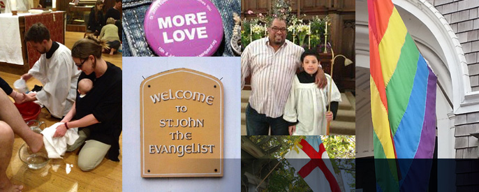
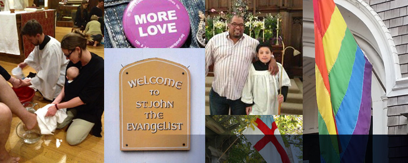

SUNDAY SERVICES
10:15 a.m. Choral Eucharist
PARISH OFFICE HOURS
Monday-Thursday 1 - 4 p.m.
DONATE TO ST. JOHN'S
GET INVOLVED
WELCOME TO ST. JOHN'S!
St. John's is a place where people's lives are transformed by encountering
the love of God in community. Christian faith isn't an idea; it's an experience.
We invite you to explore that experience with us through worship, fellowship and service.
Located around the corner from the busy Mission-16th Street-Valencia corridors in San Francisco's north Mission District, St. John's has been described by many as an oasis not only for the tranquility of our garden amidst the surrounding bustling streets, or the warm golden light that fills our soaring nave on a sunny day, but because so many have found St. John's to be a place of loving peace, healing, and renewal in an often all-too-broken world.
Our mission is to live, love, and serve in the hope and joy of the risen Christ.
Our vision: We seek to be a Christian community in which people of all sexual orientations, gender identities, cultures, and colors are welcomed and their gifts are celebrated.
Our Core Values: We are a Eucharistic worshipping community in the Anglican tradition. Our celebration of the Holy Eucharist, marked by beautiful music, is the heart of our common life.
We are a Christ-centered community. For people of all ages, we value faith formation that engages the mind as well as the heart, and provides the foundation for vibrant lay ministry.
We have a special vocation to respect and advocate for the dignity of gay, lesbian, bisexual, and transgender people. This by no means defines the full extent of our baptismal promise to respect the dignity of every human being, but it is a crucial element of that promise in our ministry context.
We value diversity and welcome anyone who wishes to explore Christian faith and practice.
We value connection, and strive to promote a sense of belonging among the members of the parish that readily includes newcomers. This is often talked about in terms of communication or pastoral care or hospitality, but it is fundamentally about feeling connected to God and to one another.
We value the North Mission neighborhood. Our location in this particular place spiritually anchors us and gives substance to our mission and ministry. This neighborhood keeps us grounded in reality.
MISSION
HISTORY
CLERGY & STAFF
LAY LEADERSHIP

 
